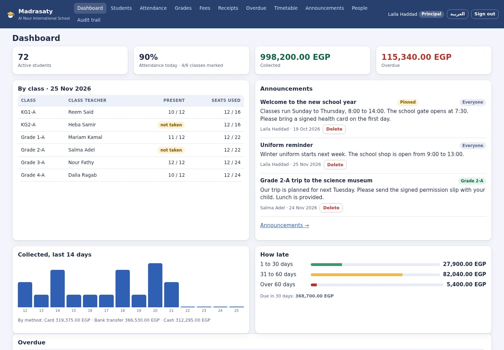
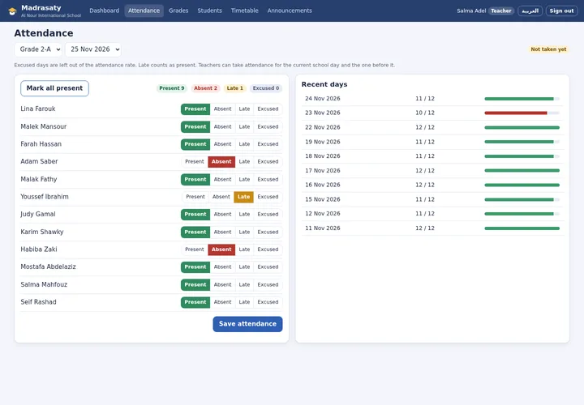
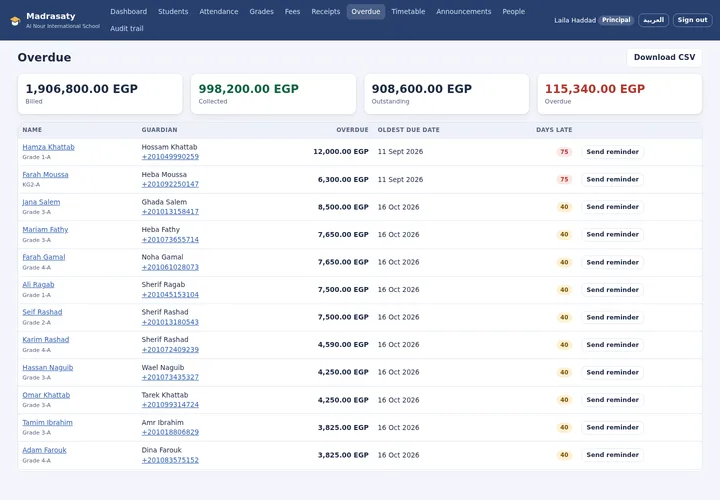
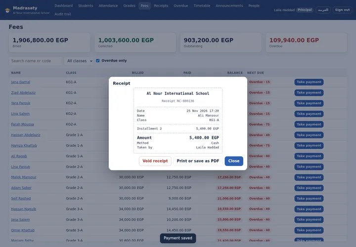
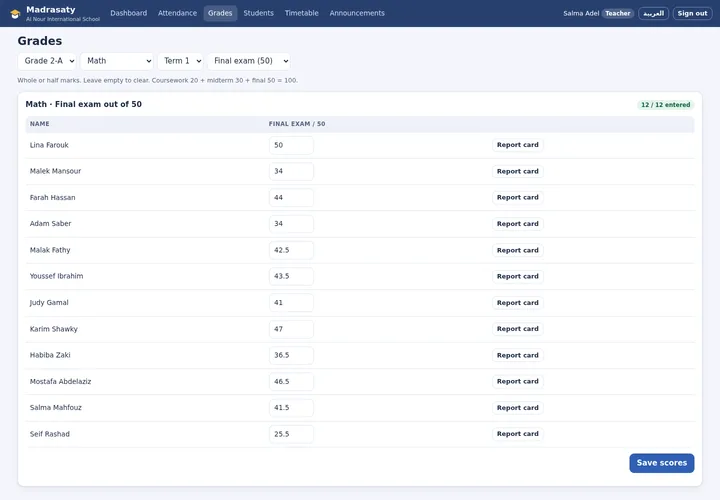
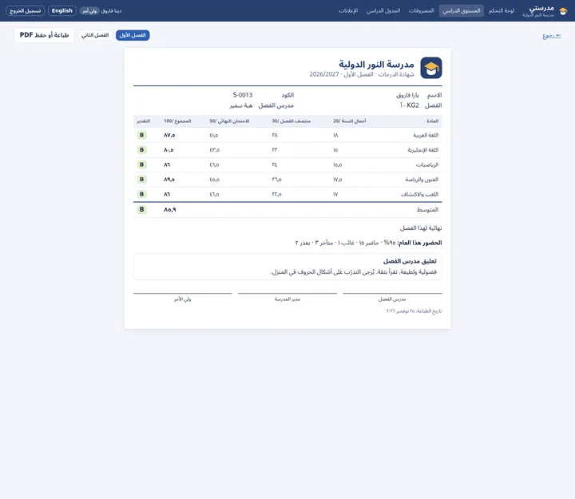
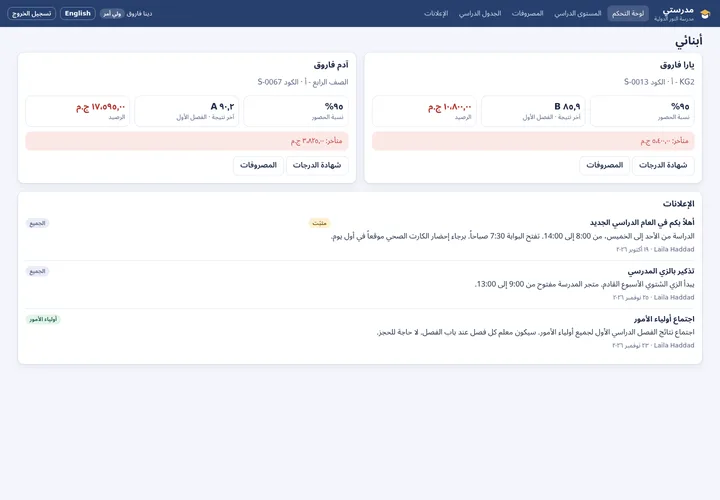
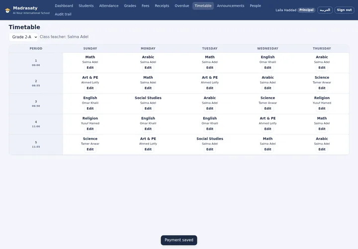

PORTFOLIO DEMO / BUILT / LIVE DEMO
Madrasaty
The whole school day, in one place.

ACTUAL BUILDMadrasaty · Admin dashboard. Fictional school and demo data.
The problem
A small school or nursery often runs on paper registers, a fee notebook and WhatsApp messages. Teachers take attendance on loose sheets, the accountant chases installments from memory, and parents only learn about marks and unpaid fees when they ask. Report cards are typed by hand every term.
What was built
A school management system with four roles. The admin sees students, classes, teachers, guardians and a dashboard with attendance today, fees collected and overdue. Teachers open their own class and mark each student present, absent, late or excused for the day, enter grades by subject and write a remark. The accountant sets fee plans per level, splits them into installments, records payments (cash or transfer), prints a receipt and works from an overdue list that can send an in-app reminder notice to the parent. Parents sign in and see only their own children: attendance, marks, the report card, fees due and paid, and school announcements. Every class has a weekly timetable. The whole interface is Arabic right-to-left or English, and the term report card prints as a clean PDF.
The approach
No framework: plain JavaScript pages, one serverless API function and one logic file that holds every rule (installment splitting, payment allocation, overdue days, attendance rate, grade totals, who may see what). The same file runs in the API, the browser and the tests. Permissions are enforced on the server: a teacher sees only their class, a parent sees only their children, and only the accountant and admin touch money. The data a parent receives contains no other family's records.
The result
A live demo anyone can open. Sign in as admin (PIN 1111), teacher (2222), accountant (3333) or parent (4444); the PINs are on the sign-in screen. The sample school has 72 students in 6 classes, 11 teachers, three fee plans, about three weeks of attendance, term 1 grades and a timetable. Verification: 28 business-rule tests and 71 browser checks run against the live site, covering every role, permission limits, payments and receipts, report card printing, Arabic RTL, a phone layout and hostile text shown as plain text.
Evidence & production limits
One shared demo workspace that resets every six hours: everyone sees and changes the same data. Sign-in is a PIN printed on the sign-in screen, so it must not hold real student data. The school, students, fees and people are fictional. Payments are recorded, not processed: there is no online payment, receipts are internal and not tax-compliant, and the reminder is an in-app notice, not SMS or WhatsApp.
Known gaps: there is no database, only one shared file, so two saves at the same instant can overwrite each other. At the time of writing the hosting account's Blob storage quota was suspended, so the live demo keeps its state in server memory and resets whenever the server instance restarts. Server error messages are English only. The report card PDF uses the browser's print dialog. There are no late fees, refunds on withdrawal or SMS. Direction and scope: Nada Gamal. Implementation: AI-assisted.
Next chapter
Real accounts with hashed passwords, a proper database, online payment, SMS or WhatsApp reminders, tax-compliant receipts and server messages in Arabic would be the next implementation steps.
Inside the build
Open any preview to see the full capture. Captures show test or demonstration content. All records shown are demonstration content, not evidence of client use.






